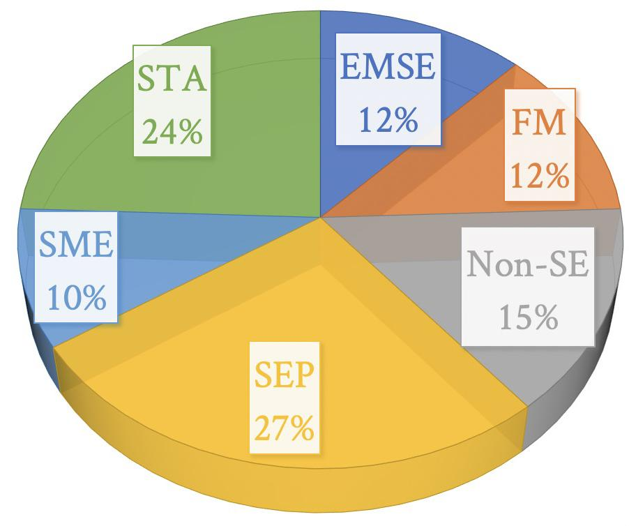

public: True class: center, middle # 课程总结 & 颁奖 蒋炎岩 <jyy@nju.edu.cn> <div class="row justify-content-md-center"> <div class="center author-block"> <p><a href="http://www.nju.edu.cn/">南京大学</a></p> </div> <div class="center author-block"> <p><a href="http://cs.nju.edu.cn/">计算机科学与技术系</a></p> <img class="inline-img" height="64px" src="../static/img/njucs.jpg"/> </div> <div class="center author-block"> <p><a href="http://ics.nju.edu.cn/">计算机软件研究所</a></p> <img class="inline-img" height="60px" src="../static/img/ics-nju.png"/> </div> </div> --- class: center, middle # PC Chairs' Summary --- # The Reviewing Process * Dec. 15: Research Proposal 提交截止 * Dec. 16: 收集论文、分配开始 * PC Chairs 快速扫描所有论文、给出一些初步的标记 * PC Chairs' review 开始 * Dec. 16: Peer Review 开始 * Dec. 25: Peer Review 结束 * 大家可以获得自己的[审稿意见](GSER2019_A4) * Dec. 26: PC Chairs' Meeting * 所有 research proposal 的最终评分/评奖 --- # (0) Desk Rejections 但我们仍然让这些 research proposals 进入同行评议环节 * Reviewer 应向 PC Chair 提出此类问题 ---- * “Object Detection in Remote Sensing Images with Convolution Neural Network” (没有使用 LaTeX) * “Privileged Instructions Rewriter” (没有参考文献，编译问题) * “A Design of Form Auto-Generator Based on JSON Schema” (没有参考文献) * “How Do Stack Overflow Posts and Github References Co-evolved?” (错误的字号) * “Defect Prediction on Deep Learning” (没有使用 LaTeX) --- # (1) 论文分配 (Bidding) PC Chairs 快速给每篇论文打上 tags (EMSE, SEP, FM, STA, SME) * 在论文提交系统 (hotcrp, easychair, ...) 中，每篇论文都有若干 tags；PC 会对 tag 关注打分 .center[] --- # (1) 论文分配 (cont'd) 论文分配算法 * 两篇论文的 relevance: * <math> \displaystyle \frac{ |A \cap B| }{ \min\\{|A|, |B|\\}} + \varepsilon</math> (randomness) * 求解总体 relevance 最大的分配方案 (as an MIP) * 每个人分配 <math> k = 3 </math> 篇论文 * 每篇论文分配 <math> k = 3 </math> 个人 --- # (1) 论文分配 (cont'd) ```python def assign(objs): n, m, x = len(objs), Model('review-assignment'), [] N = range(n) for i in N: x.append([m.add_var(var_type=BINARY) if i != j else None for j in N]) m.objective = maximize( xsum([objs[i].dist(objs[j]) * x[i][j] for i in N for j in N if i != j])) for i in N: m += xsum([1.0 * x[i][j] for j in N if i != j]) == N_REVIEW m += xsum([1.0 * x[j][i] for j in N if i != j]) == N_REVIEW m.optimize() res = {} for i in N: res[i] = [j for j in N if i != j and x[i][j].x >= 0.99] return res ``` --- # (2) Reviewing Process: 填表 ```html -*-*-*-*-*-*-*-*-*-*-*-*-*-*-*-*-*-*-*-*-*-*-*-*-*-*-*-*-*-* Paper #12: This Is the Paper Title ------------------------------------------------------------ Overall Merit: X ------------------------------------------------------------ You can use Markdown syntax here. ``` -- count: false ---- 疑问：SHA-1 hash digest * .green[我得到了待评审的论文，那通过它的 hash digest，不就可以得到所有人的 review package 了？] -- count: false * 尝试过 (点赞) 的同学应当失败了 * 我们使用 `gs` 重写了所有的 pdf (大部分比提交时体积减少) --- # (3) PC Chairs Reviews 42 个同学，均分给三位 PC Chairs评分，五个标准 * Soundness (A/B/C/D): 方法是否合理 * Novelty (A/B/C/D): 方法是否新颖、与相关工作讨论是否得当 * Significance (A/B/C/D): 工作是否具有研究价值 * Presentation (A/B/C/D): 写作、图、表是否得当 * Overall merit (A/B/C/D): 整体评价 * Award (Yes/No，每人选出 3 个) --- # (4) PC Chairs Meeting 参考 reviews，快速简短地决定了大家的生死 (误 * 决定了 Distinguished Paper Award 和 Distinguished Review Award * 有一篇 research proposal 中发现了抄袭 * 大段的原文复制，无论是否引用都是抄袭 * <span class="red">非常严重的学术不端</span>，本课程计 0 分 * 所有同学引以为戒 * 分数统计 * PC Chairs: -0.31 ± 1.18 * Peer-review: 0.39 ± 1.4 --- # PC Chairs' Summary 绝大部分同学的 research proposal 没有达到投稿的状态 * 几乎不可避免地会被 top conference reject * 革命尚未成功，同志仍需努力 -- count: false ---- 普遍持有的心态：.red[<strike>得过且过</strike>] * 对于 researcher 来说，这是不允许的 (integrity) * 做有价值、有挑战性的问题，只投稿有实际贡献的论文 --- class: center, middle # 颁奖 --- class: center, middle # Distinguished Review Award Winners 欧先飞 (DZ1833019) 谢佳鑫 (MG1933072) DZ1933028 王洋 MG1333333 XXX: “” MG1333333 XXX: “” MG1333333 XXX: “” --- class: center, middle # Distinguished Proposal Award Winner 李聪 (DZ1833012) “Torturing Android Apps Under Adverse Network Conditions” --- class: center, middle # 课程总结 --- # 课程内容 “Three Easy Pieces” * reading (and presenting): 30 篇论文，准备 5 个报告 * writing: research proposal 系列 * hacking: 扫描源代码、动态分析、两个作业 ---- 从我们的观察，大部分同学不能算是合格的 top-tier researcher * 如果没有 motivation 做科研：.blue[劝退] * 提高水平的建议：<span class="red">多读、多读、多读</span> (用 BigData 训练) * 试图去理解哪些是真正的好 paper (好 paper 也有弱点) * 2020 年经历了 ICSE PC，我们提高了对软件工程研究的 bar * 必须在方方面面无懈可击 --- # 课程反馈与调整 (为了明年的二周目) 报告形式 * 增加 bidding 机制，让每个同学都精心准备报告并且评分 | (2019) | 仔细准备 | 不仔细准备 | | :------: | :------: | :------: | | 抽到 | 😁 | 😱 | | 没抽到 | 😭 | 😁 | -- count: false ---- 论文列表 * 有些论文大家普遍有困难/不好理解 * 有些更值得读的论文应当入选 -- count: false ---- Hacking * 没料到这学期课那么少还有运动会…… --- class: center, middle # *Happy Software Engineering!* 如果你喜欢这门课，请向你的师弟/师妹推荐[软件所](ICS_NJU)！